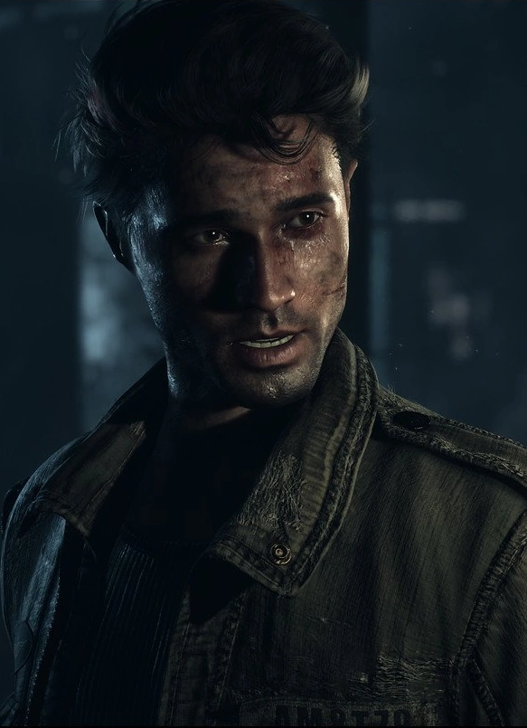

Mike comes off as the neigborhood douche the second you meet him, acting as the catalyst for Hannah's death. He is shown to be immensely confident and has a pretty big ego. This, however, changes at his storyline progresses.
The start of the game doesnt set up Mike much better than the prologue does. We see him getting questionably close with Emily, before running off with Jess after the two girls get into a fight. This story, however, takes a sharp turn at the end of Chapter 4 when Jess gets grappledthrough the window of the cabin they find themselves at. This leads to Mike chasing after her in an attempt to save her life. Jess can die here, but if you play your cards right as Mike, he becomes her knight in shining armor.
During the midpoint of the game, Mike finds himself at the Blackwood Sanitorium after chasing Jess' captor. The Sanitorium is old and abandones, with the building in an obviously deteriorating state. He finds a wolf buddy, Wolfy, and ends up exploring the area, finding answers to the bizarre events the crew has been experiencing. After he finds these answers, he reconvenes with the rest of the group, finds out Josh is the killer, and potentially shoots Emily.
After Mike can shoot emily, he realizes that Josh, who was tied up outside, is gone. This causes him to run back to the Sanitorium where he explodes the structure killing numerous miner wendigos. He then runs back to the cabin where he faces Hannah with the other survivors. If you keep him alive here, he will survive.
While Mike starts off the game in a terrible fashion, I think he greatly redeems himself through his protection of the group, and challenges he has to overcome. Mike becomes an extremely dynamipc character by the end of the game, and his perserverence helps everyone escape the night. I guess I can look past him almost shooting Emily in some regards, but that was definitely his worst moment of the night.
Mike's Score: 7.5/10
